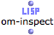
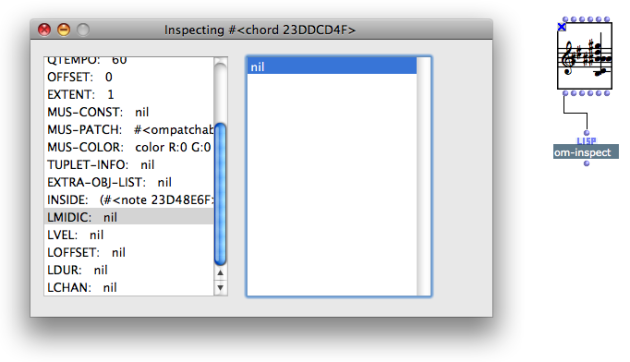
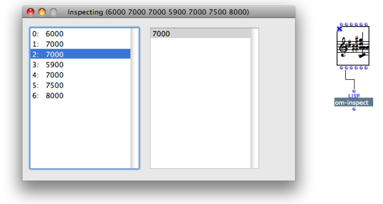
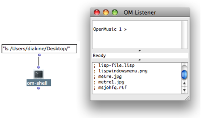
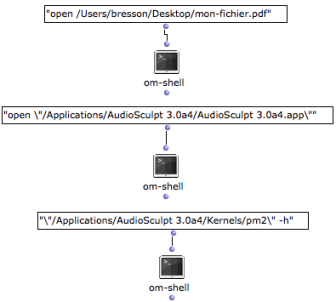

OpenMusic DocumentationHiérarchie de section : OM 6.6 User Manual > Lisp Programming > Lisp Tools
OpenMusic DocumentationHiérarchie de section : OM 6.6 User Manual > Lisp Programming > Lisp Tools
Navigation : page précédente | page suivante
Attention, votre navigateur ne supporte pas le javascript ou celui-ci à été désactivé. Certaines fonctionnalités de ce guide sont restreintes.
Lisp Tools
Several underlying Lisp functionalities are available from the OM patches, as show the few examples presented below.
The Object Inspector : Om-Inspect
Properties
|  | The om-inspect function allows an interactive inspection of the contents of a data structure. All slots or elements of the structure can be browsed and inspected recursively, via a a simple list display interface. |
Browsing an Object
To browse the structure of the object, connect the "self" output of the object to the "object" input of the function.

To get information about the current value of an specific slot, connect the relevant output to the function.

System Calls : Om-Shell
Properties
The om-shell function sends system calls to the Unix Terminal — MacOSX — or to the Win32 Console — Windows. It is a useful and easy way to run external programs from OM.
Example #1 : Browsing a Folder

The "ls" command in Unix allows to list the contents of a directory. The command "ls " + pathname to the folder will be display this list in the Listener.
Examples #2 : Launching an Application or a File
An application of a file can be launched via the "open ", "open \" commands, or with a a command line.

Références :
Plan :
Navigation : page précédente | page suivante
A propos...(c) Ircam - Centre Pompidou